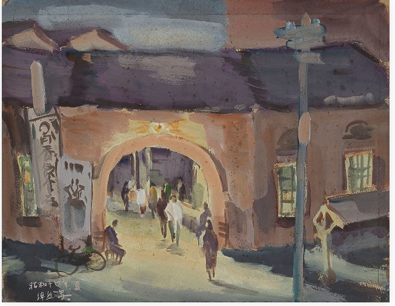

詭地圖．
EP.01 移位之地
1932，名字不見了
你已鎖定舊市場街廓。現在不要讀答案——自己把「永和市場」往歷史裡追。
檔案庫只允許一次關鍵字檢索。
你要找的是「今天這座市場，在1932年留下的痕跡」。你會輸入哪個詞？
SEARCH › 永和市場
NO EXACT MATCH // 1932
奇怪。地點還在，名字卻斷了。
如果「永和市場」不是當年的名字，你下一步應該追什麼？
ARCHIVE HIT · 1932
桃園消費市場
同期報刊線索指向市場開場。你追的不是另一座市場，而是同一條歷史脈絡中的另一個名稱。
玩家發現：「永和市場」一路追到1932，名稱會消失；接手線索的是「桃園消費市場」。
EVIDENCE B · 1939 點擊畫面檢視

ART-01 · 1939《夜之素描》
現在，1932年的市場第一次有了樣子。
研究者依建築特徵，將畫中場景指向桃園街消費市場。點一下畫面，再決定這件證物究竟能證明到哪裡。
現在把兩件證物放進正確的證據盒：
EVIDENCE A · 1932 同期報刊線索
可支持：1932年「桃園消費市場」開場的歷史時間錨。
EVIDENCE B · 1939《夜之素描》研究判讀
研究者依建築特徵認為可能描繪桃園街消費市場。
NAME SHIFT // VERIFIED THREAD
永和市場 → 桃園消費市場
你已經把「名字」追到1932。可是更早的1920年代，連市場本身都還沒出現。